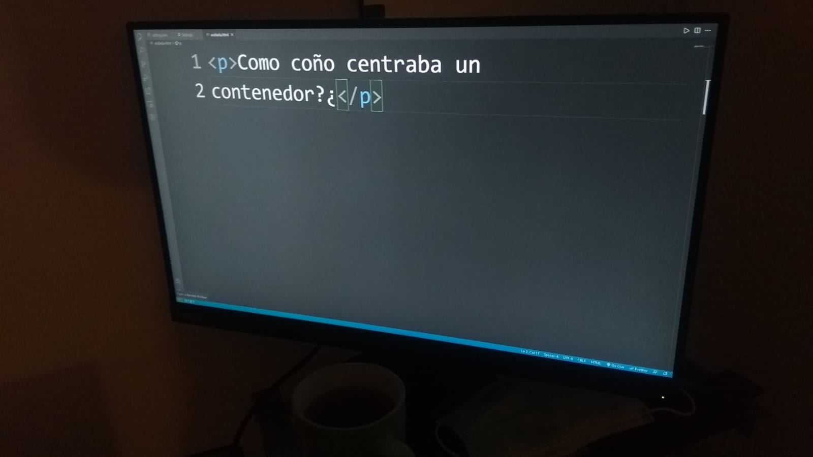

Dentro de muy poco (eso espero) pienso hacerle un lavado de cara a mi blog e intentar mejorar los aspectos de diseño y técnicos.
Lavado de cara para la página
19-10-2021

En estos últimos meses he recibido reseñas y críticas sobre el diseño e organización de la página, que antes de seguir déjenme aclarar que soy un mal diseñador xD, pero eso no significa que no me tenga que esforzar para hacer un buen trabajo. Lo más rescatable sobre estas críticas ha sido sobre el problema con la paleta de colores. la cual es:
color principal: #2ECC71;
color de letras: #0B5345;
color secundarioA: #dbdbdb;
color secundarioB: white;
Como ven no es muy profesional.Y algunos colores se terminan perdiendo cuando están encima de otros llegando a ser difícil ver el contenido que hay dentro.
otro detalle destacable es la organización de sección que hay dentro de la página y el problema con algunos elementos al no ser completamente responsive.
En ciertas resoluciones algunos elementos se ponen encima de otros y desde un móvil la fuente de los posts es muy pequeña.
Estos problemas de responsive lo solucionare primero mientras que la organización de las secciones y la paleta de colores irán mucho después.
En temas técnicos pues el principal problema es tooodaa la página, Digett desarrollador del 2020 no es el mismo digett desarrollador del 2021.
Cuando inicie el desarrollo lo hice con una vista de Desktop y no mobile first que sería lo adecuado ya que el 90% del tráfico es desde móviles y debería centrarme en la mayoría. Hice el intento a principios de este año para convertirlo en Mobile First pero realmente se volvió como una bola con parches que terminan arruinandola.
No sé si recuerdan ese capitulo de Hora de aventura donde aparecía como un niñito con una cabeza totalmente circular que le pusieron un montón de parches. Ya pues algo asi esta la pagina en este instante.

Mejorar mi codigo en html y css para un mejor manejo de las clases creando variables e intentar no repetir algunos estilos y organizar mejor las etiquetas.
Aparte de este problema tengo pendiente una mejora, convertir la página en una Single-page application para menores tiempos de carga y para que haya tiempos de carga y cuando entres a algun enlace primero cargue el texto e imágenes bien y no aparezca todo feo, luego optimizar las imágenes y poner creditos de donde las saque si les gustan.
por ahora solo son estos cambios que tengo en mi cabeza los cuales veo que son los más importantes.
aquí una lista:
(X)1.- El problema de las secciones encima de otras.
2.- Fuentes de letra muy pequeñas en ciertos dispositivos.
3.- Optimizar imágenes y detalles informáticos.
4- Paleta de colores junto a organización de la página utilizando Mobile first.
5.- Mientras hago la tarea 4 tengo que mejorar el código.
6.- Volver esta página una single-page application.
7.- Corregir faltas ortográficas y mejorar redacción en ciertos posts.
Espero terminar estas 6 tareas a comienzos del otro año o si no voy a quedar mal conmigo mismo.
Que la masa por aceleracion les acompañe